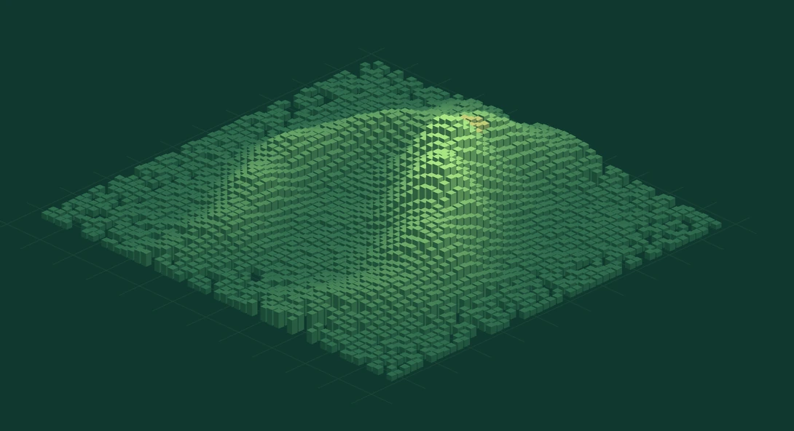

同一个指标，两种冠军
WMT22 按自动分的百分位均值选系统，四个方向的推荐都超出人工容差。改用原始分均值，英译中选中了人工冠军，另外三个仍超出容差。

切换评测年份和翻译方向，比较达到同一发布标准所需的专家评分条数。
实验数据
| 实验 | 翻译方向 | 对照策略 | 排序引导 | 减少 |
|---|
两个系统各有四份译文。点击卡片揭晓罚分，看看还要查几条，才能确认 A 的平均罚分至多比 B 高 0.25 分。
WMT22 按自动分的百分位均值选系统，四个方向的推荐都超出人工容差。改用原始分均值，英译中选中了人工冠军，另外三个仍超出容差。
MT-Bench 有 3,355 条专家偏好票。确认严格第一名时，GPT-4 引导使复核量从约 2,500 条降至 1,832 条。移除 GPT-4 作为候选后，节约降到 2.6%。
数值翻译实验将每条人工罚分限制在 0–25。结论针对能匹配的固定题池，成本按打开的历史评分计算。未来题目上的表现与真实排班工时还需另外测量。
英文全文 · 12 页 · 含实验设计、数学推导与附录